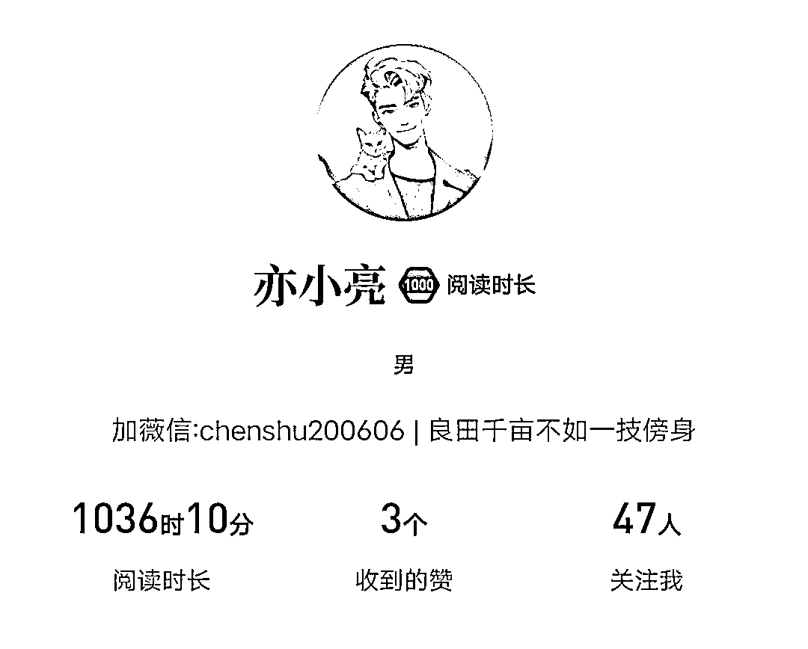
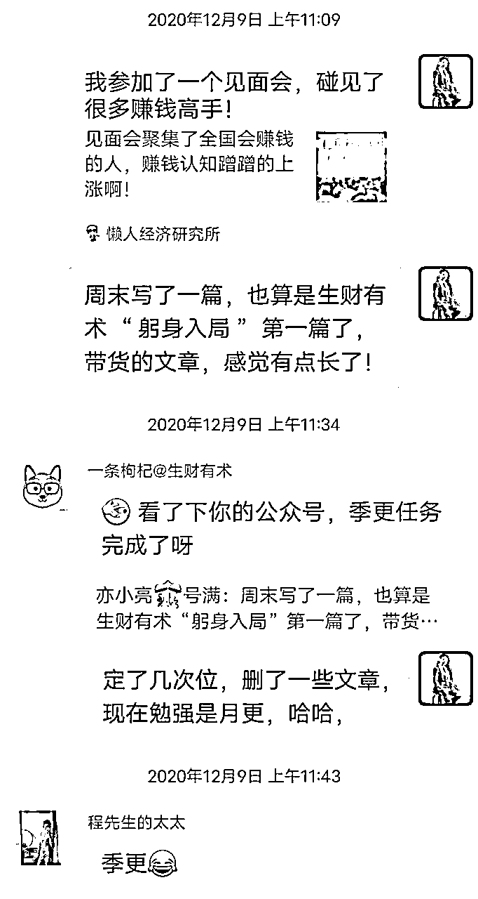
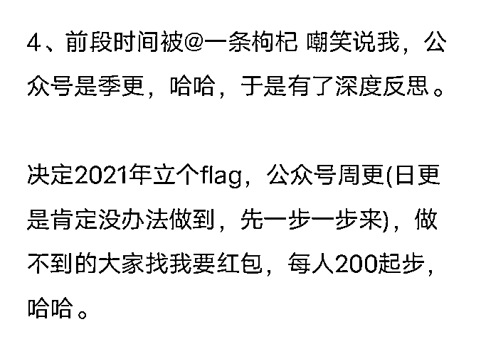
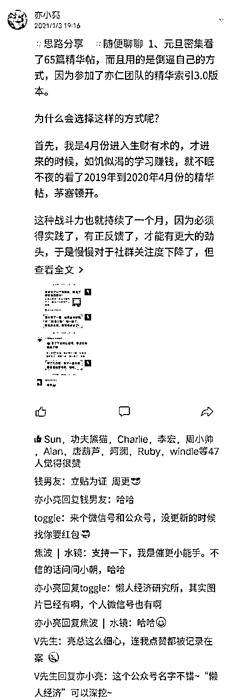
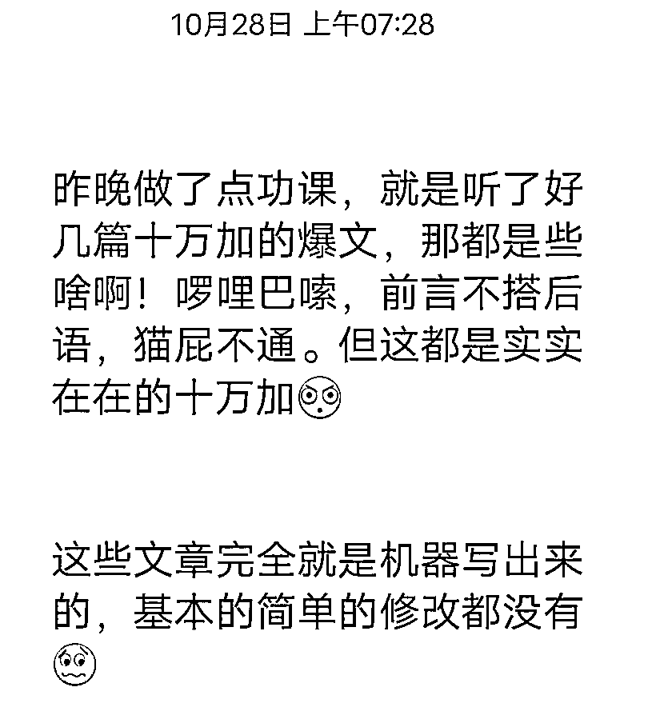

来源：https://gd7vhxq16l.feishu.cn/docx/C99IdjVBooxfV1xNBVDcDUUBnHe
嗨，大家好，我是亦小亮，老生财人了。
同时也是公众号爆款写作航海教练。
虽然航海已经结束了一段时间了，可是放弃航海的人数可一点不少，可能生财下期航海报名人数再也没有9月航海人数多了，这里指的是公众号爆款写作这艘船。
为什么放弃的人那么多呢
被每天几块钱的反馈熬死?
为什么每天只有几块钱的收益?
因为心思都在找指令上?
完全不明白爆款逻辑?不愿意下笨功夫，呆功夫。
为什么要找指令?很简单啊，想走捷径啊
最后捷径走了，发现无路可走，只有倒回去去找新项目?周而复始，一年就这样过去了。
基于以上情况，今天分享的这篇文章是可以保住这个项目的下限，有了下限，才能心无旁贷地驰骋上限。有了下限，才🈶资本坚持下去，否则每天几块钱，任谁也坚持不了。
保住收益下限必须拥有三个心（一颗日更心，一颗模仿心，一颗复盘心）。
最近，做公众号流量主项目，日更又拾了起来，也有学员谈到，不用gpt很难做到日更，确实是这样，但是我想跟大家分享一下我日更的心得。
这样做了，日更起来更容易些，以下是我平时用的六种日更方案，希望对于还在纠结日更消耗意志力的同学有帮助：
正确的废话反复说，听到这句话，第一反应，就是抄自己的原创文章，看了一些日更大佬的文章，才终于明白这个正确的废话反复说是这样的。
首先，这个反复并不是单纯把前面的文章一骨碌复制过来，是拆解自己过去的文章，通过这一段时间，得到的新知，重新融合，得到更好的解释。
或者这么说吧，一些方法道理，反复说，只是把其中的案例内容一换，事件场景一换。就是一篇新文章。
我这边有一招，屡试不爽，一周一个主题，把这个主题拆解下来，每天更新一点，周末来个融合。
周一讲一点，周二讲一点，直到周五，讲了5点，周六一汇总，周日再来一个复盘，就这样一周内容搞定了，简直不费吹灰之力，要是再借住ChatGPT，时间上就更搞高效了。
比如我关注的V先生的星球，即使他2019年的内容，现在也是常看常新，常看，体悟也不一样。
增加自己的新知，我自己目前也是在微信上阅读，已经达到1036小时，有想一起阅读的，可以一起来。

发现新知，对于我们旧的认知，将是一次洗礼。
讲到flag，就不得不回忆加入生财的第一年，也就是2020年，而立flag是发生在2020年12月，当时的情况是这样的：
经过了艰难的2020年，很多目标都搁浅了。面对2021年，还需要去立目标吗？
这个问题横在这里，让原本打算元旦出去散散心的心情蒙上了一层散不开的迷雾。
不确定，于是，元旦这天徘徊犹豫，转辗反侧，最终勤奋小人战胜了懒惰小人，决定了还是要立的，为什么呢？
不立很可能所有目标都无法实现，更可能直接搁浅，立的话，倘若完不成，也至少可能会完成七八十，要比前者强几十倍，对比衡量就这样——立。
说立就立马立，时间来到2021年1月3日清晨六点，怎么立?立给谁看(监督)?立在什么地方?立多久？立什么目标?
这样一想，一大堆的问题，列了个清单，就这样开始了新年立flag的过程。
首先，当然要立一个小目标，鉴于2020年公众号才发了12篇，而且10篇是前半年发的，可以说是月更或者季更了。

为了把写作目标完成，本次目标为周更，坚持稳定输出，而不是把周更的任务堆积到月末的最后四天，所以必须一周完成一篇，也是为了保证量的前提下，也要保证质。
至于立多久，一个月、半年，还是一年，想想还是一年，为了搭配其他目标。
立给谁看?
以往都是给自己啊、亲人啊、团队伙伴啊，效果一直达不到满意程度，就在于这些熟人，即使你完不成也是老样子，也不会有人怪你，最多烦扰你几句。
所以，这次要把人群锁定在更广泛一些人群，比如客户、微信朋友、熟悉的陌生人，最终锁定在了生财有术的18000个朋友，这里不仅价值观离的较近，也会有一部分星友成为催更小能手，督促自己，都是能提高目标完成度的。
立在什么地方?
还是跟以前一样把目标写出来，贴着床头、洗漱间的镜子旁、挨着生财日历的书桌上，写到公众号上。
还有，既然要立给生财人看，就直接把flag立到星球里。
这样一套立flag的过程完成后，看了半天，总觉得少点啥?拿给老妈看，老妈说要是跟前年、去年你都完成不了，怎么办？（还是老妈了解自己儿子）。
哦，拍了一下脑袋，原来少了一个惩罚措施，那么立个什么惩罚呢？又是一阵思索，来个仰卧起坐100个(噗嗤一笑)，罚个几千几万块钱给家人朋友团队伙伴，好像也起不到什么作用来，很可能不仅惩罚起不到什么作用，而且立flag成了一个娱乐活动，想想不能这样做。
大脑灵机一动，既然决定把flag立在生财有术群里，那么，不如把惩罚措施也跟生财有术有关，现在生财有术星球有将近18000人，这么多人监督我。

帖子现在还在生财里挂着，还可以找到。
表面上有18000人，给自己一些压力，想想一个人200元，18000人360万，想想就可怕，瑟瑟发抖。
仔细一想，怎么可能，别给自己脸上贴金了，往常发过的帖子也就一百多人点赞，说明顶多100人看见帖子)，这样推算下来，100人点赞，50人关注，10个人监督，一个人给人家200元，也就2000元，顶多到最后100人都监督了，2万块破天了。
心理预期有了，那就发吧！
最终的结果，如图。

如果你也有跟我立flag的时候，遇到过相似的问题?或者你比我有更好的立flag的方法，分享给我吧。
回顾整个立flag的过程，我直接用了5W2H。
what(什么目标)
微信公众号周更
why(为什么立)
立比不立更能完成目标
when(什么时间)
一年时间，从1月4号开始
where(立在哪里)
主要战场在生财有术星球里
who(立给谁看)
18000个生财之友
how(怎么立)
利用5W2H分析法
how much(罚款多钱)
一次完不成的话，看到的人每人给200元
其实，这个方案对于急需改变现状的人，蛮实用的。
今年后半年做公众号成绩还行，就打算热乎着，就在这里再次定一个flag，不同2021年，2024年定个日更的目标，断一天，在群里发不少于100块钱的红包。
既然要立flag，就要严格按照立flag的规矩：
what(什么目标)
微信公众号日更，粉丝达成１万
why(为什么立)
立比不立更能完成目标
when(什么时间)
一年时间，从1月１号开始１２月３１日结束
where(立在哪里)
生财有术星球、我的微信公众号、ｆｌａｇ小报童
who(立给谁看)
６0000个生财圈友、不到２０００公众号粉丝
how(怎么立)
利用5W2H分析法
how much(罚款多钱)
断一次，在围观群里发１００元红包，最终目标完不成的话，群里发不少于２０００元红包
做公众号流量主项目，很多人一上来就是找低粉爆文，去洗人家的稿，完完全全把路走偏了，走邪了。
我们找对标，这一步是对的，但是请不要找一些质量差，完全是机器一遍过来的文章，多去研究好的，真正的好文章，这样对于你提高文章的质量大有脾益。
图一：这是一个圈友有点丧气话

前面提到，找到对标了，我们该怎么去模仿？
其实，当我们筛选好适合自己的爆文后，就要从模仿开始，而正确的模仿需考虑三点： 模仿的时间、模仿谁、模仿什么。
为什么大家都愿意找低粉爆文账号，就是因为对方账号权重低，这个时候模仿它，自己短时间内阅读量也会起。
别人在过了起号阶段，去模仿它的爆款文章，这确实是一个捷径。
前段时间，还有人问我，公众号流量主这个项目还有可能入局的可能性嘛。
其实，这要看这个项目是在整个大市场的什么时期，前期、中期、后期，这点非常重要。
项目前期的话，反馈数据非常少，参照的东西就非常少，大家经验也是不足，都在摸索中前行，你走得快，你就是先行者，可能后行者们都非常依赖你的分享。
当然你吃的土，肯定最多。
到了中期的话，随着参与项目的人多起来，分享的信息也多了起来，参照物也变得清晰起来，防坑手册也变得丰富起来，你做起来当然没有前期的时候那么难了，同时，相同领域逐渐多起来，可能会形成一级二级竞争，比如航海群里情感领域，可以说已经卷成不成样子了。
后期的话，就要做一遍筛选了(因为同行们分享的内容，肯定是站在自身角度分享，你得拨开云雾见真相)，直接照搬，很可能路径不完全对，但是，通过学习别人的错误，可以降低风险，如果都是自己来承担全部的失败风险，成本必然很高，比如其他船员的一些避坑经历。
这样的话，都比前中期操作容易一点，直接越过各种坑，唯一的缺点就是竞争已经很大了。
所以，不光是细分方向选择窄了，资格要求也高了，这让我想起了最近很热的视频号分成计划，起初挺容易拿到资格的，现在已经没那么容易了。
这就是你筛选一个项目，必须考虑的，入手时机很重要，时机对了，你的努力会有成倍的回报，时机过了或者甚至早了，你的努力所获得的回报慢、少或者很可能付之东流。
目前公众号流量主项目就在中期，虽然epom一直在降低，但是还是比其他平台单价高，对于新手来说，也依然可以作为打开副业的大门，作为入局的好项目。
毕竟，公众号公众号在微信生态里，承担着很多闭环动作，成为其他项目的基建，项目落地的内容载体。所以，这是一个长期可以做下去的项目。
从谁那里模仿？
是模仿一个人还是多人?
模仿的好，能最大限度不绕远路，不折返跑。
其实模仿谁，对于每一个人都是复杂的，本身赚钱就是一个复杂体系，这里不讲这个复杂体系。
曹大有一个面包屑理论，倒挺适合学习赚钱这个学科的，从这个人分享的知识点学一点，从那个人分享的学一点，慢慢丰满起自己，慢慢的对于一个项目的知识点都清楚了。
其实，找对标，就是这种理念的执行，看这个账号表达出来的思维、产品、路径，落实到执行的话，就是账号名字、签名栏，文章标题、内容等等。
这里的找对标账号，不是单单找低粉爆文账号，也要去找大号里面，长期爆款内容，学习常规爆款选题。
模仿对象找到了，就剩最后一个，确定你模仿什么在行动，这是最节约时间的，尽量不错付你的注意力。
模仿什么？
小到模仿标题、封面图、文章结构，大到从模仿选题、内容规划，当然目前公众号流量主项目，真正的难点在于掌握爆款逻辑和熟练正确掌握技术要领，当然这里的技术不单单指AI指令，这个指令在这里很抽象，既代表单一的一个指令，也指指令背后的技术要素，很多人可能对技术不感冒，怎么学都学不会，还有畏难情绪，其实大可不必。
掌握了爆款逻辑一样可以做这个项目，而且GPT的用处，仅仅用于生成文章，就大材小用啦！
总之，什么时候模仿、模仿谁、模仿什么，这三个要点紧密相连，而学习公众号爆款写作项目一定会遇到模仿的三个阶段。
我们模仿的本质，是为了尽快入局，避免白热化竞争(价格战、同类产品消耗战、相同领域内容同质化)，也就是说模仿导致竞争战略加快，迭代速度加快。
据说在艺术的世界里，平凡的艺术家模仿其他作品的表面，卓越的艺术家会进入作品，从内部“盗走”作品。为了能够达到这个水平，必须进入模仿对象，在模仿对象内部“扎根”。
深层次讲，就是模仿的艺术了，同样的参照物，因为模仿者的思维，导致模仿效果高低大小不同。
当我们知道了模仿的时机、模仿谁、模仿什么的时候，也要知道，模仿分为三个阶段，我们必须时刻谨记靠拢第三个阶段。
（1）单纯的照抄式模仿；
（2）根据实际情况进行变动；
（3）得到新的创意：本质性转移。
看到一个不错的对标账号，起初都是照着作者的方法单纯的照抄式模仿，到了中期， 就要根据个人知识及经历调整你的模仿内容及节奏，在内容中使用你熟悉的知识（专业相关性），在你的大背景和经历下，寻找新的创意。
最后，形成自己的东西。
说大了，腾讯QQ不就是从单纯照抄式模仿到根据国内情况进行变动到最后本质性转移，才有了我们8090后的青春记忆嘛！现在的英雄联盟，何尝不是，日活达到了1亿，不香嘛？
说小了，我们每天面对不同行业的信息差，第一步不都是单纯的照抄式模仿吗？
所以，照抄不可怕，可怕的是一直照抄 ，必须向第二阶段，第三阶段靠拢。很多人做公众号流量主项目，一直停留在第一阶段，也就一直没啥实质进步，当潮水褪去，谁在裸泳就知道了。
所以，模仿的第三个阶段，才是我们建立了防守反击的铜墙铁壁。
我们先来看看复盘的价值：
（1）复盘有助于避免犯同样的错误
复盘会记录当下所犯的错误，以免下次重蹈覆辙，比如航海手册里有一份违禁词，就是这个理。
（2）复盘有助于找到规律
这个在我们群发一篇文章的时候，都记录下来，那个阅读量高，点赞在看转发高，从而找到规律，我们就往后以这个样板发文章。
找到规律，不仅使我们的时间更高效，最后的成果也斐然。
咱们先来看复盘的逻辑是什么，这样有助于你下笔的时候，门清儿。
（1）实际发生了什么？
我们做了什么动作后，发生了什么，是阅读量过万、点赞量过千，涨了1000个粉丝，回顾一下，当时是怎么做到的，加了什么标签，关联了什么热点，标题用了什么关键词。
还原一下整个过程，什么做对了。 结果导向，回溯一下。
（2）差异原因是什么？
昨天发的文章和今天发的文章阅读量差很大，是什么造成的。 对标账号做了什么，我没有做到等等。
对标账号发了流量特别好，我的为什么只是个位数？
（3）从中学到了什么？如何改进？ 经验or规律？
行动改进建议，从以上动作、事情上，我该做何种改进等等。
比如修改标题关键词等等。
对于平时不写作的人来说，也是一笔不小的任务，为了凑字可以说，伤透了脑筋，狠不得把能认识的字儿都搬进去，上面提到了复盘的价值、底层逻辑，就是为了让船员们重视起来，光重视是不够的，也要有方法的如何去应对复盘，当然复盘可以设置时间间隔，或者事件发生，比如发生10w+阅读。
讲到如何复盘，先来看看关于目标常常碰到一些常见误区：
上船的船员大体上关于预期目标会有以下几个常见的误区
（1）目标不清，看着别人公众号都10w+的阅读了，赶快上船，却不第一时间，想想自己做公众号，用什么做，直到上了船，才知道选题是第一课，他才恍然大悟，开始思索是情感领域呢还是娱乐领域，是做热点内容还是做兴趣内容，是日更还是隔天更，总之，上船之前目标不清。
（2）没有目标，还有一部分船员根本就没有目标，看见亦仁老板说这个赛道红利期，就抱着试试的态度，做个一个月，行就继续，不行就撤退，再换一个项目试试，完全就是一副赚快钱的样子。
总的来说，我们用联想一直沿用的从三个方面来阐述。
（1）小事及时复盘
小事因为小，复盘的时候不用牵扯太多的因素，所以可以及时复盘。 但也因为小，很容易过去就过去了，所以要及时复盘。大多数船员可能都是到了周末才去复盘，忽略掉了在搜集素材，发布文章，查看阅读量等小事上复盘，而周末复盘就是阶段性复盘，以确定是不是偏离了目标，有没有更好的方式，要做什么修正。
比如，可能经过一周，发现自己选择的领域不适合自己，阅读量一直起不来，就是选题出现问题，下一周要及时修复改正。
比如，我教船员的一个方法，突然觉得一篇文章要爆了的时候，打开后台，默默数数，10秒是多少阅读，过百的话很可能是大爆，几个或者几十的话，估计是小爆，隔一段时间，去看看数数（当然不是每篇爆文都这样，才开始经验方面欠缺，可以这么做）也许，流量就被停掉了。
（2）阶段性复盘
大事则因为大，不能等到事情结束之后再复盘，而是要在做的过程中，阶段性地进行复盘，以确定是不是偏离了目标，有没有更好的方式，要做什么修正。
如果中间不进行阶段性复盘，则很可能最后的结果与原来的设想相距十万八千里。
阶段性复盘，当初的一些信息都比较新鲜，记忆也比较深刻，复盘的基准更为准确。如果等到事后再复盘，可能因为记忆的修饰作用，失去了真实性。
这个特指公众号运营一周，发表7篇文章以后，去阶段性复盘一下，这里应该有个当然，当然，你的公众号成熟了以后，也可以免去这个阶段性复盘，转向下一个阶段性复盘，比如对于账号的阶段性复盘。
（3）事后全面复盘
航海这个具体事情结束了，要进行事后全面复盘，因为整个事情都完成了，有了一幅完整的画卷，可以全盘回顾。 事后全面复盘，是做事的真正完成。
没有事后的全面复盘，事情其实只算做完了一半，支付的成本（时间和精力、金钱）并没有完全获得效益。
总之，不管是小事及时复盘，还是大事阶段性复盘，还是事后全面复盘，其实本质是一样的，那就是当事情有了一个结果，不管是阶段性的结果还是最终的结果，都可以进行复盘。
换句话说，做了动作之后，就可以复盘。因为有动作就会有结果。小动作有小结果，大动作有大结果。
也就是说，小事、大事，事后的复盘，都应该及时进行。
说完了三个心，咱们来聊聊两个意，有了它们，你就可以驰骋上限了。
这是主战场，大多数人赖以生存的，这个是前提，才有后面的一意。
而影响流量主收益的几个要素，其实我在航海里已经讲了很多了，主要集中在打开量、完读量、点击量，每个动作背后都有小动作，每个小动作都有提高的必要性。
这里不过多累赘，大家可以去航海的高手分享里面找或者在这篇文章看。
重点在下面。
很多人用AI写文章，完全不顾及读者的阅读体验，更有甚者说，排版没啥作用，很多时候发了几篇没有任何排版的文章，爆了，就认为排版没有用。
阅读体验对于读者来说，是基本需求，要是满足了读者更多更高需求，就会得到真金白银的心意。
具体表现在以下几点:
1、文章打赏和付费，文章确实不错，读者才会有这个动作，当然要是文章设定付费了，流量主的就少了文中广告，这个付费是需要账号具有很强的信任感，大多数船员都是即开即用的新号不具备。所以往下看。
2、如果你平常喜欢看一些英剧美剧，都会有两种版本，一种是删减版的大家都能看到，无删减版本很多人，也可以说大多数人看不到，而这部分需求量有很大，就有了夸克网盘拉新这个收益点。
3、还有国内平时有热播剧或者有大热的正主的剧，粉丝们是愿意付费会员去追这些剧，又不想花太多的钱，你就可以提供各种会员，比如腾讯视频会员，爱奇艺会员，优酷会员。这个领域还有电影票、明星演唱会门票等等。
4、小说推文，要比单纯情感领域爆文更稳、更安全。
5、带货，这个就不用多讲了。
6、知识付费，引流私域，做知识变现，我就尝试了用小报童做载体来做知识付费，把我这8个月的经验分享出来了。
7、小程序变现
8、公众号文章抽取重点内容做成视频，发布到公众号次条，顺便发往视频号，赚取视频号分成计划收益，而视频文案扩写成文章，发往公众号。
9、以上是共性，我们来谈谈一些领域里特殊变现方式，比如旅游领域，可以接景点推广广告，也可以升级帮他们做景点整体营销方案，我的一个旅游号就接了一万块钱的拍摄视频及推广的案子。
希望这篇文章对正在咬牙坚持做公众号流量主项目的圈友一点帮助。